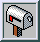

Welcome to Arch Linux!
Arch Linux is an independently developed GNU/Linux distribution for i686-compatible computers. It is designed to be simple, lightweight and easy to configure. The system begins with a small base installation; users add only the software they need.
Arch uses the pacman package manager and a rolling release system. Packages are kept current without reinstalling the operating system.
About Arch
Arch Linux was started by Judd Vinet in 2002. The project is inspired by the simplicity of earlier Linux distributions and gives users direct control over system configuration.
The base system is intentionally small. Configuration files remain readable and ordinary system tools are preferred over graphical setup utilities.
Get Arch Linux
Read the installation notes before writing the image to a CD.
Package management
pacman installs, removes and upgrades software packages. Package information and file lists are available from the command line.
# pacman -Syu
# pacman -S package_name
Documentation
Project news
| 11 Mar 2002 | Arch Linux 0.1 is available. |
| 11 Mar 2002 | The project homepage is now online. |
 Questions and installation reports are welcome on the Arch Linux mailing list.
jnngl@arch-linux.beer
|